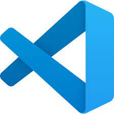

Текстовые редакторы
Содержание:
Сперва рассмотрим HTML-редакторы для разработчиков. Для тех, кто понимает структуру страницы и может, используя HTML, разместить контент на сайте. Такие приложения дают больше свободы верстальщикам. Ведь благодаря возможностям разметки они получают полный контроль над информацией на ресурсе и его визуальной составляющей.
- Atom
- VS Code 
- Автозаполнение кода на разных языках программирования.
- Автоматический поиск ошибок и их исправление.
- Визуальное улучшение кода с помощью ESLint или Prettier.
- Отдельные расширения для поиска специфичных ошибок, которые не может найти редактор по умолчанию.
- Плагин Live Server для предпросмотра веб-приложений и сайтов в реальном времени.
- Sublime Text
- Notepad++
Atom построен на базе фреймворка Electron, что делает его универсальным приложением для всех платформ сразу, то есть для Windows, macOS и Linux. Также это дает возможность расширять возможности редактора, используя JavaScript. Разработчики могут менять функциональную составляющую Atom и внешний вид приложения, адаптируя его под свои нужды (используемый язык программирования, проект, над которым работает пользователь и т.п.). Поэтому многие разработчики по праву считают его лучшим HTML-редактором.

Из интересных фишек стоит отметить множественные курсоры для редактирования одновременно нескольких строк кода и функцию Teletype для совместной работы нескольких программистов в одном пространстве.
Еще один бесплатный редактор HTML-разметки на базе Electron. Это разработка Microsoft с огромным набором плагинов. С помощью расширений можно добавить в него массу дополнительных функций:

HTML-компилятор из Австралии, распространяющийся по условно-бесплатной модели. То есть сам редактор в базовом виде можно загрузить и использовать бесплатно, но чтобы получить весь набор доступных в нем функций, придется раскошелиться.
Sublime Text сочетает в себе лучшее из двух миров (из Open Source и мира проприетарного ПО). За счет платных лицензий и грамотной монетизации у разработчиков программы остается возможность регулярно обновлять продукт и поддерживать его. В то же время код достаточно «открыт», чтобы сторонние разработчики могли добавлять в него новые функции и создавать расширения, используя язык программирования Python.

Создатель проекта считает главным преимуществом своего приложения использование только встроенных инструментов для разработки под Windows, чтобы добиться максимальной производительности и сократить нагрузку на процессор компьютера.